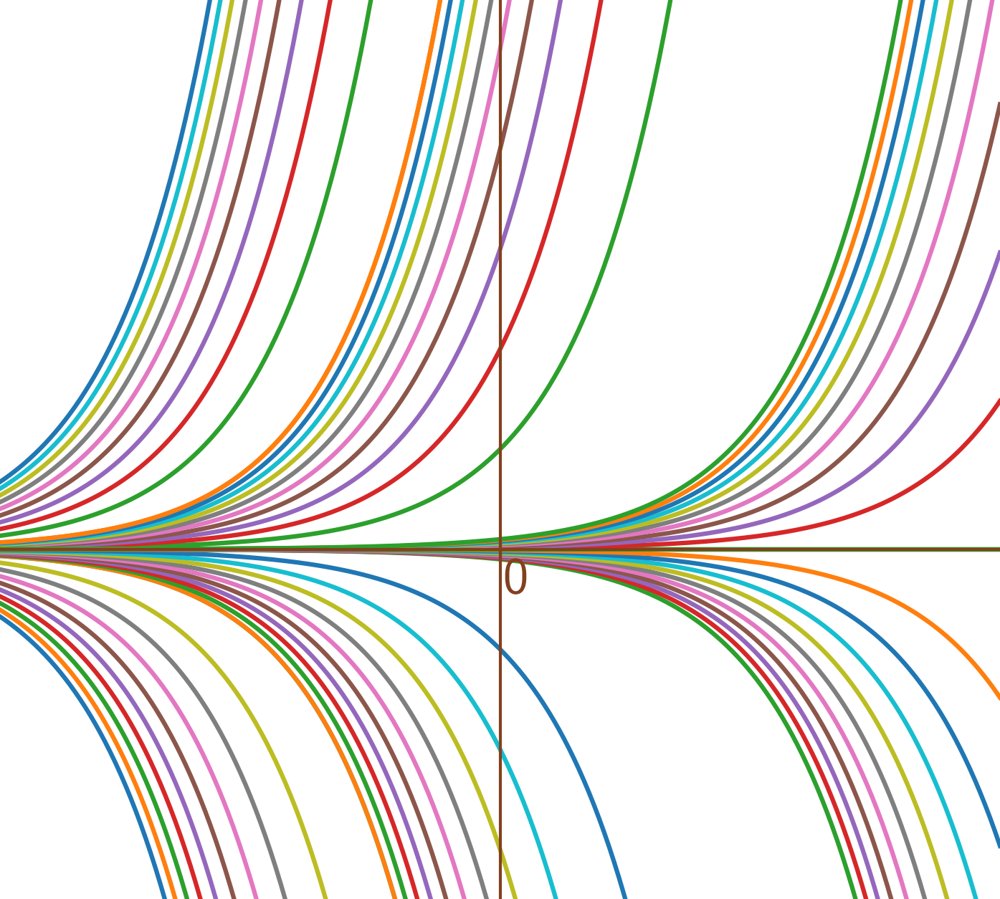
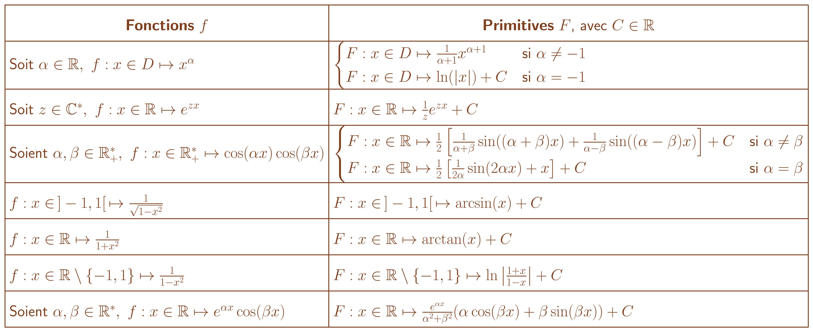

Soient \(a : I \to \mathbb{R}, b: I \to \mathbb{R}\) continues sur \(I\), intervalle de \(\mathbb{R}\). L’équation différentielle linéaire d’ordre 1 associée à \(a\) et \(b\) s’écrit \[\label{eq:edo_lin_ordre_un} \tag{$E_1$} y'(t) = a(t)y(t)+b(t).\] Une solution de \(\eqref{eq:edo_lin_ordre_un}\)sur \(I\) est une fonction \(y\) de \(I\) dans \(\mathbb{R}\) dérivable sur \(I\) telle que \[\forall t \in I, y'(t) = a(t)y(t)+b(t).\]
Si \(a\) est la fonction nulle,\(\eqref{eq:edo_lin_ordre_un}\)se réduit à \[\tag{$E_1$} y'(t) = b(t)\] et alors \[y \text{ solution de~$\eqref{eq:edo_lin_ordre_un}$} \iff y \text{ est une primitive de $b$ sur $I$}.\]
Si pour tout \(t \in I, a(t) = 1, b(t) = 0\) ,\(\eqref{eq:edo_lin_ordre_un}\)se réduit à \[\label{eq:ex_exp} \tag{$E_1$} y'(t) = y(t)\] et alors \(\begin{array}{lllll} y_0 & : & I & \to & \mathbb{R}\\ & & t & \mapsto & e^t \\ \end{array}.\) est solution de \(\eqref{eq:ex_exp}\)sur \(I\).
Soit \(C \in \mathbb{R}\), notons que les fonctions \(\begin{array}{lllll} y & : & I & \to & \mathbb{R}\\ & & t & \mapsto & Ce^t \\ \end{array}.\) sont aussi solutions de \(\eqref{eq:ex_exp}\)sur \(I\).
Soient \(a : I \to \mathbb{R}, b: I \to \mathbb{R}, c: I \to \mathbb{R}\) continues sur \(I\), intervalle de \(\mathbb{R}\). On peut considérer l’équation différentielle linéaire associée à \(a,b,c\) : \[\label{eq:edo_non_resolue} \tag{$F_1$} c(t)y'(t) = a(t)y(t)+b(t)\] qui est équivalente à la formulation de la définition si pour \(t \in I, c(t) \neq 0\) parce qu’alors \[y'(t) = \frac{a(t)}{c(t)}y(t)+\frac{b(t)}{c(t)}.\]
Si \(c\) s’annule sur \(I\), on dit que\(\eqref{eq:edo_non_resolue}\)est non résolue sur \(I\) et son étude est plus compliquée que ce qui suit.
Considérons \[\tag{$E_1$} y'(t) = a(t)y(t)+b(t).\] sur \(I\) et supposons qu’elle possède une solution \(y_0 : I \to \mathbb{R}\) sur \(I\). Cela signifie que pour tout \(t\in I\), \(y_0'(t) = a(t)y_0(t)+b(t)\).
Recherchons les autres solutions. Soit \(y: I \to \mathbb{R}\), \[\begin{aligned} \text{$y$ solution de~$\eqref{eq:edo_lin_ordre_un}$sur $I$} & \iff \text{$y$ dérivable sur $I$} \text{ et }\forall t \in I, y'(t) = a(t)y(t)+b(t) \\ & \iff \text{$y$ dérivable sur $I$} \text{ et }\forall t \in I, y'(t)-y_0'(t) = a(t)(y(t)-y_0(t)) \\ & \iff \text{$y$ dérivable sur $I$} \text{ et }\forall t \in I, (y-y_0)'(t) = a(t)(y-y_0)(t). \\ \end{aligned}\]
(Équation différentielle homogène) On considère l’équation différentielle \[\label{eq:edo_lin_ordre_un_homogene} \tag{$H_1$} z'(t) = a(t)z(t).\] appelée équation différentielle homogène associée à \(\eqref{eq:edo_lin_ordre_un}\).
On a alors \[\begin{aligned} \text{$y$ solution de~$\eqref{eq:edo_lin_ordre_un}$sur $I$} & \iff \text{ $z := y-y_0$ solution de~$\eqref{eq:edo_lin_ordre_un_homogene}$sur $I$}. \end{aligned}\]
En notant \(\mathcal{S}_\eqref{eq:edo_lin_ordre_un}\) l’ensemble des solutions de \(\eqref{eq:edo_lin_ordre_un}\)sur \(I\) alors \[\mathcal{S}_\eqref{eq:edo_lin_ordre_un} := \{y_0+z / z \text{ solution de~$\eqref{eq:edo_lin_ordre_un_homogene}$sur $I$}\}\]
Supposons que \(z\) est strictement positive sur \(I\). Alors \[\begin{aligned} & z \text{ solution de~$\eqref{eq:edo_lin_ordre_un_homogene}$sur $I$} \\ & \iff \text{ $z$ dérivable sur $I$ et $\forall t \in I, z'(t) = a(t)z(t)$} \\ & \iff \text{ $z$ dérivable sur $I$ et $\forall t \in I, \frac{z'(t)}{z(t)} = a(t)$ ($z$ ne s'annule pas sur $I$)}\\ & \iff \text{ $z$ dérivable sur $I$ et $\forall t \in I, (\ln \circ z)'(t) = a(t)$ ($z$ strictement positive sur $I$)}\\ & \iff \text{ $z$ dérivable sur $I$ et $\forall t \in I, (\ln ( z(t)) = A(t) + C$ avec $A$ primitive de $a$ et $C \in \mathbb{R}$}\\ & \iff \text{ $z$ dérivable sur $I$ et $\forall t \in I, z(t) = C'e^{A(t)}$ avec $A$ primitive de $a$ et $C' \in \mathbb{R}^{+\star}$.} \end{aligned}\] Cela correspond effectivement aux solutions de \(\eqref{eq:edo_lin_ordre_un_homogene}\)au détail du signe près.
(Ensemble des solutions de l’équation homogène \(\eqref{eq:edo_lin_ordre_un_homogene}\)) L’ensemble des solutions de l’équation homogène \(\eqref{eq:edo_lin_ordre_un_homogene}\)sur \(I\) s’écrit \[\mathcal{S}_\eqref{eq:edo_lin_ordre_un_homogene} = \{t \in I \mapsto Ce^{A(t)}/ C\in \mathbb{R}\}\] avec \(A\) une primitive de \(a\).
D’abord, \(a\) est continue sur \(I\) donc admet bien une primitive. Ensuite, faisons la preuve par double inclusion.
Soit \(C \in \mathbb{R}\), en posant \(z : t \in I \mapsto Ce^{A(t)}\), \(z\) est dérivable sur \(I\) et \[\forall t \in I, z'(t) = a(t)Ce^{A(t)} = a(t)z(t)\] donc \(z\) est solution de \(\eqref{eq:edo_lin_ordre_un_homogene}\)sur \(I\).
Soit \(z\) solution de \(\eqref{eq:edo_lin_ordre_un_homogene}\)sur \(I\), on pose \(f : t \in I \mapsto z(t)e^{-A(t)}\). Montrons que \(f\) est constante sur \(I\). \[\forall t \in I, f'(t) = z'(t)e^{-A(t)}-a(t)z(t)e^{-A(t)} = a(t)z(t)e^{-A(t)}-a(t)z(t)e^{-A(t)} = 0\] Or \(I\) est un intervalle donc \(f\) est constante sur \(I\). Il existe donc \(C \in \mathbb{R}\) tel que \[\forall t \in I, z(t)e^{-A(t)} = C \iff \forall t \in I, z(t)=Ce^{A(t)}.\]
Pourquoi cela ne dépend pas de la primitive de \(a\) ? Si on note \(B\), une autre primitive de \(a\), il existe \(c \in \mathbb{R}\) tel que \(B = A+c\). Donc pour \(C \in \mathbb{R}, Ce^{A(t)} = Ce^{B(t)-c} = C'e^{B(t)}\) avec \(C' = Ce^{-c}\).
Soit \(z\) solution de \(\eqref{eq:edo_lin_ordre_un_homogene}\)sur \(I\) alors soit \(z\) est nulle, soit \(z\) ne s’annule pas sur \(I\).
Soit \(z\) solution de \(\eqref{eq:edo_lin_ordre_un_homogene}\)sur \(I\) alors il existe \(C \in \mathbb{R}\) tel que \(\forall t \in I, z(t) = Ce^{A(t)}\). Soit \(C = 0\) et \(z\) est nulle, soit \(C \neq 0\) et \(z\) ne s’annule pas sur \(I\).
Exercice — Résoudre sur \(\mathbb{R}\) : \[\label{eq:ex1_homogene} \tag{$Ex_1$} (e^t+1)z'(t) = 2z(t)\]
Corrigé — \(z\) solution sur \(\mathbb{R}\) de \(\eqref{eq:ex1_homogene}\) \(\iff\) \(z\) dérivable sur \(\mathbb{R}\) et \(z\) solution de \((F'_0) : z'(t) = \frac{2}{e^t+1}z(t)\) (\(t \in \mathbb{R}\mapsto e^t+1\) ne s’annule pas.)
On retombe donc sur le cas des propositions précédentes et il suffit de déterminer une primitive de \(a: t\in \mathbb{R}\mapsto \frac{2}{e^t+1}\).
Or, la primitive de \(a\) qui s’annule en \(0\) s’écrit \(A(x) = \int_0^x \frac{2}{e^t+1}dt\).
En faisant le changement de variables \(u = e^t\), on a \(du = e^t dt \iff dt = \frac{du}{u}\) et donc
\[A(x) = \int_1^{e^x} \frac{2}{u+1}\frac{du}{u}\]
De plus, pour \(u > 0\), \(\frac{1}{u(u+1)} = \frac{1}{u}-\frac{1}{u+1}\)
donc \[\begin{aligned} A(x) & = 2\int_1^{e^x}\frac{1}{u}\frac{du}{u}-2\int_1^{e^x}\frac{1}{u+1}\frac{du}{u} \\ & = 2[\ln u]_1^{e^x} - 2[\ln (1+u)]_1^{e^x} \\ & = 2x-2\ln(1+e^x)+\text{Cste}. \end{aligned}\]
Donc les solutions de \(\eqref{eq:ex1_homogene}\)sur \(\mathbb{R}\) s’écrivent
\[z : t \in \mathbb{R}\mapsto Ce^{2t-2\ln(1+e^t)} = C\frac{e^{2t}}{(1+e^t)^2}, C \in \mathbb{R}.\]
Exercice — Résoudre sur \(]-1,1[\) : \[\label{eq:ex2_homogene} \tag{$Ex_2$} z'(t) = \sqrt{1-t^2}z(t)\]
Corrigé — Il suffit de déterminer une primitive de \(a: t\in ]-1,1[ \mapsto \sqrt{1-t^2}\).
Or, la primitive de \(a\) qui s’annule en \(0\) s’écrit \(A(x) = \int_0^x \sqrt{1-t^2}dt\).
En faisant le changement de variables \(t = \sin u\), on a \(dt = \cos u du\) et donc
\[\begin{aligned} A(x) & = \int_{0}^{\mathop{\mathrm{Arcsin}}(x)} \sqrt{1-\sin^2 u} \cos u du \\ & =\int_{0}^{\mathop{\mathrm{Arcsin}}(x)} \cos^2 u du\\ \end{aligned}\]
Or, \(\cos^2 u = \frac{1+\cos 2u}{2}\) donc
\[\begin{aligned} A(x) & =\frac{1}{2}\int_{0}^{\mathop{\mathrm{Arcsin}}(x)}du+\frac{1}{2}\int_{0}^{\mathop{\mathrm{Arcsin}}(x)} \cos(2u)du\\ & = \frac{1}{2}\mathop{\mathrm{Arcsin}}(x) + \frac{1}{4}\left[\sin(2u)\right]_0^{\mathop{\mathrm{Arcsin}}(x)} \\ & = \frac{1}{2}\mathop{\mathrm{Arcsin}}(x)+\frac{1}{4}\sin(2\mathop{\mathrm{Arcsin}}(x)). \end{aligned}\]
Or, comme \(\sin(2x) = 2\cos(x)\sin(x)\),
\[\sin(2\mathop{\mathrm{Arcsin}}(x)) = 2\cos(\mathop{\mathrm{Arcsin}}(x))\sin(\mathop{\mathrm{Arcsin}}(x)) = 2x\sqrt{1-x^2}\]
donc \[\begin{aligned} A(x) & = \frac{1}{2}\mathop{\mathrm{Arcsin}}(x)+\frac{1}{2}x\sqrt{1-x^2} \end{aligned}\]
Donc les solutions de \(\eqref{eq:ex1_homogene}\)sur \(\mathbb{R}\) s’écrivent
\[z : t \in \mathbb{R}\mapsto Ce^{\frac{1}{2}\mathop{\mathrm{Arcsin}}(t)+\frac{1}{2}t\sqrt{1-t^2}}, C \in \mathbb{R}.\]
Rappelons l’expression de \(\eqref{eq:edo_lin_ordre_un}\): \[\tag{$E_1$} y'(t) = a(t)y(t)+b(t).\]
On connaît la forme des solutions sur \(I\) de \(\eqref{eq:edo_lin_ordre_un}\) \(\mathcal{S}_\eqref{eq:edo_lin_ordre_un} := \{y_0+z / z \text{ solution de~$\eqref{eq:edo_lin_ordre_un_homogene}$sur $I$}\}\) mais elle dépend d’une première solution \(y_0\).
Cas particulier. Dans certains cas, on peut obtenir directement \(y_0\) :
Si pour tout \(t\in I, a(t) = C, b(t) = d\) pour \(C,d \in \mathbb{R}\) alors \(y_0 : t \in I \mapsto -\frac{d}{c}\) convient.
Cas général : Méthode de la variation de la constante.
Pour rappel, les solutions de l’équation homogène \(\eqref{eq:edo_lin_ordre_un_homogene}\)s’écrivent \(t \in I \mapsto Ce^{A(t)}\) avec \(C \in \mathbb{R}, A\) primitive de \(a\).
La méthode de la variation de la constante consiste à chercher une solution \(y_0\) de \(\eqref{eq:edo_lin_ordre_un}\)sous la forme \(y_0 : t \in I \mapsto C(t)e^{A(t)}\) où \(C\) n’est plus une constante mais une fonction dérivable sur \(I\).
On a alors \(y_0\) dérivable sur \(I\) et \[\begin{aligned} y_0 : t \in I \mapsto C(t)e^{A(t)} \text{ solution de~$\eqref{eq:edo_lin_ordre_un}$sur $I$} & \iff y_0'(t) = a(t)y_0(t) + b(t) \\ & \iff C'(t)e^{A(t)} + a(t)y_0(t) = a(t)y_0(t) + b(t) \\ & \iff C'(t) = b(t)e^{-A(t)} \end{aligned}\]
et il suffit alors de prendre \(C\) primitive de \(t \in I \mapsto b(t)e^{-A(t)}\) (qui est continue) pour avoir \(y_0\) solution de \(\eqref{eq:edo_lin_ordre_un}\).
Cela donne donc
\(\eqref{eq:edo_lin_ordre_un}\)admet toujours une solution,
une méthode pour trouver une solution explicite.
Exercice — Résoudre \((E): y'(t) + \frac{1}{t}y(t) = e^{-t}\) sur \(I = \mathbb{R}^{+\star}\).
Corrigé —
Résolution de l’équation homogène \((H): y'(t) + \frac{1}{t}y(t) = 0 \iff y'(t) = -\frac{1}{t}y(t)\).
Une primitive de \(t \in \mathbb{R}^{+\star}\mapsto -\frac{1}{t}\) est \(t \in \mathbb{R}^{+\star}\mapsto -\ln(t)\) donc les solutions de l’équation homogène s’écrivent \(t \in \mathbb{R}^{+\star}\mapsto Ce^{-\ln(t)} = \frac{C}{t}\) avec \(C \in \mathbb{R}\).
Détermination d’une solution \(y_0\) de \((E)\)
Posons \(y_0 : t \in \mathbb{R}^{+\star}\mapsto \frac{C(t)}{t}\) avec \(C\) dérivable sur \(\mathbb{R}^{+\star}\).
Alors, \(y_0\) est dérivable sur \(\mathbb{R}^{+\star}\) et pour tout \(t \in \mathbb{R}^{+\star}\),
\(y_0\) solution de \((E)\) \(\iff \forall t \in I, \frac{C'(t)}{t}-\frac{C(t)}{t^2} + \frac{C(t)}{t^2} = e^{-t} \iff \forall t \in I, C'(t) = te^{-t}\).
Il reste donc à déterminer une primitive de \(t\in \mathbb{R}^{+\star}\mapsto te^{-t}\).
La primitive de \(t \in \mathbb{R}^{+\star}\mapsto te^{-t}\) qui s’annule en \(0\) s’écrit \(\int_0^x te^{-t}dt\). En intégrant par parties avec \(\begin{cases} u(t) &= t \\ v(t) & = -e^{-t} \end{cases} \Longrightarrow \begin{cases} u'(t) &= 1\\ v'(t) & = e^{-t} \end{cases}\), on a \[\int_0^x te^{-t}dt = [-te^{-t}]_0^x+\int_0^xe^{-t} = -xe^{-x}-e^{-x}+\text{cste}.\]
Donc \(y_0 : t \in \mathbb{R}^{+\star}\mapsto \frac{-te^{-t}-e^{-t}}{t} = -e^{-t}-\frac{e^{-t}}{t}\) est solution.
Détermination de toutes les solutions.
Toutes les solutions de \((E)\) s’écrivent donc \(t \in \mathbb{R}^{+\star}\mapsto -e^{-t}+\frac{C-e^{-t}}{t}\), \(C\in \mathbb{R}\).
Soient \(t_0 \in I\), \(u_0 \in \mathbb{R}\), il existe une unique solution de \(\eqref{eq:edo_lin_ordre_un}\)telle que \(Y(t_0) = u_0\).
Les solutions de \(\eqref{eq:edo_lin_ordre_un}\)s’écrivent \(Y : t \in I \mapsto y_0(t) + Ce^{A(t)}\) avec \(C \in \mathbb{R}, A\) primitive de \(a\) sur \(I\) et \[Y(t_0) = u_0 \iff y_0(t_0) + Ce^{A(t_0)} = u_0 \iff C = (u_0-y_0(t_0))e^{-A(t_0)}.\]
Soit \((O,\vec{i},\vec{j})\) un repère orthonormé du plan. Une courbe intégrale de \(\eqref{eq:edo_lin_ordre_un}\)est la courbe représentative d’une solution de \(\eqref{eq:edo_lin_ordre_un}\)dans le plan.
D’après ce qui précède, pour \(M_0 = (t_0,y_0) \in I \times \mathbb{R}\), il existe une unique courbe intégrale passant par \(M_0\).
Les courbes intégrales de \(\eqref{eq:edo_lin_ordre_un}\)ne se croisent pas.
Supposons que deux courbes intégrales associées à deux solutions \(y_1,y_2\) se croisent en un point \(M_0 = (t_0,y_0) \in I \times \mathbb{R}\).
Alors, \(y_1(t_0) = y_0 = y_2(t_0)\) donc par la proposition [prop:unique_cond_init], \(y_1 = y_2\).
On illustre ci-contre quelques courbes intégrales de \(y'(t) = y(t)\) pour \(t \in \mathbb{R}\). Si on les affiche toutes, on ne voit plus rien car elles recouvrent alors tout le plan par la proposition [prop:unique_cond_init].

(Continuité et dérivabilité d’une fonction à valeurs dans \(\mathbb{C}\)) Soit \(f : I \to \mathbb{C}\). Pour \(t \in I\), on écrit \(f(t) = f_1(t)+if_2(t)\) avec \(f_1 : t \in I \mapsto \mathop{\mathrm{Re}}(f(t)) \in \mathbb{R}\) et \(f_2 : t \in I \mapsto \mathop{\mathrm{Im}}(f(t)) \in \mathbb{R}\).
Par définition,
\(f\) est dite continue sur \(I\) si \(f_1\) et \(f_2\) sont continues sur \(I\),
\(f\) est dite dérivables sur \(I\) si \(f_1\) et \(f_2\) sont dérivables sur \(I\). Dans ce cas, pour \(t \in I\), la dérivée de \(f\) en \(t\) est \(f'(t) = f_1'(t)+if_2'(t)\).
\(f : t \in \mathbb{R}\mapsto e^{it} \in \mathbb{C}\) est dérivable sur \(\mathbb{R}\) avec pour \(t \in \mathbb{R}, f'(t) = -\sin(t) + i\cos(t) = i(i\sin(t) + \cos(t)) = ie^{it}\).
Soit \(z \in \mathbb{C}\), tel que \(z=a+ib\) avec \(a,b\in \mathbb{R}\), en posant \(f : t \in \mathbb{R}\mapsto e^{zt} \in \mathbb{C}\), \(f_1(t) = \mathop{\mathrm{Re}}(f(t)) = e^{at}\cos(bt)\) et \(f_2(t) = \mathop{\mathrm{Im}}(f(t)) = e^{at}\sin(bt)\).
Donc \(f\) est dérivable sur \(\mathbb{R}\) avec pour \(t\in \mathbb{R}\), \[\begin{aligned} f'(t) & = f_1'(t)+if_2'(t) \\ & = ae^{at}\cos(bt) -be^{at}\sin(bt) + iae^{at}\cos(bt) +ibe^{at}\sin(bt) \\ & = af_1(t) -bf_2(t) + iaf_2(t) +ibf_1(t) \\ & = z(f_1(t)+if_2(t)) \\ & = ze^{tz} \end{aligned}\]
Les règles de calculs de fonctions à valeurs réelles s’étendent aux fonctions à valeurs dans \(\mathbb{C}\).
Les équations différent équations différentielles linéaires d’ordre \(1\) avec des fonctions à valeurs dans \(\mathbb{C}\) fonctionnent précédemment, c’est l’occasion de faire le bilan de ce qui précède.
Soit \(a : I \to \mathbb{R}, b: I \to \mathbb{R}\) continues sur \(I\), intervalle de \(\mathbb{R}\), à valeurs dans \(\mathbb{C}\). L’équation différentielle linéaire d’ordre 1 associée à \(a\) et \(b\) s’écrit \[\label{eq:ordre_1_complexes} \tag{$E_1$} y'(t) = a(t)y(t)+b(t).\]
L’équation homogène associée à \(\eqref{eq:ordre_1_complexes}\)s’écrit \[\label{eq:ordre_1_complexes_homogene} \tag{$H_1$} y'(t) = a(t)y(t)+b(t).\]
Les solutions sur \(I\) de \(\eqref{eq:ordre_1_complexes_homogene}\)s’écrivent \[\mathcal{S}_\eqref{eq:ordre_1_complexes_homogene} = \{t \in I \mapsto Ce^{A(t)} / C\in \mathbb{R}\text{ et }A\text{ primitive de $a$}\}\]
Soit \(y_0\) solution particulière de \(\eqref{eq:ordre_1_complexes}\)sur \(I\), les solutions sur \(I\) de \(\eqref{eq:ordre_1_complexes}\)s’écrivent \[\mathcal{S}_\eqref{eq:ordre_1_complexes} = \{y_0 + z / \text{$z$ solution de l'équation homogène associée~$\eqref{eq:ordre_1_complexes_homogene}$sur $I$}\}\]
Une solution particulière \(y_0\) sur \(I\) de \(\eqref{eq:ordre_1_complexes}\)peut être déterminée à l’aide de la méthode de la variation de la constante.

Pour \(x \in D\) et \(\alpha \neq -1\), \(F(x) = \frac{1}{\alpha+1}e^{(\alpha+1)\ln(x)}+C\) donc \(F'(x) = \frac{\alpha+1}{(\alpha+1)x}e^{(\alpha+1)\ln(x)} = \frac{x^{\alpha+1}}{x} = x^\alpha\).
Par la partie précédente, pour \(x\in \mathbb{R}\), \(F'(x) = f(x)\).
Pour \(x \in \mathbb{R}\), \(\cos(\alpha x)\cos(\beta x) = \frac{1}{2}(\cos((\alpha+\beta)x)+\cos((\alpha-\beta)x))\) donc
pour \(\alpha = \beta\), \(\cos(\alpha x)\cos(\beta x) = \frac{1}{2}(\cos(2\alpha x)+1)\) et \(F(x) = \frac{1}{2}(\frac{1}{2\alpha}\sin(2\alpha x)+x)\),
pour \(\alpha \neq \beta\), \(F(x) = \frac{1}{2}(\frac{1}{\alpha+\beta}\sin((\alpha+\beta) x)+\frac{1}{\alpha-\beta}\sin((\alpha-\beta) x))\).
Cf cours précédent.
Cf cours précédent.
Pour \(x \in \mathbb{R}\setminus \{-1,1\}, \frac{1}{1-x^2} = \frac{1}{(1-x)(1+x)} = \frac{1}{2}\left[\frac{1}{1+x}+\frac{1}{1-x}\right]\) donc \(F(x) = \frac{1}{2}\left[\ln(|1+x|)-\ln(|1-x|)\right]\).
Pour \(\alpha, \beta \in \mathbb{R}^{\star}, f(x) = \mathop{\mathrm{Re}}(e^{(\alpha+i\beta)x})\).
Or, une primitive sur \(\mathbb{R}\) de \(g:x \mapsto e^{(\alpha+i\beta)x}\) est \(G:x \mapsto \frac{1}{\alpha+i\beta }e^{(\alpha+i\beta)x}\).
Notons que si \(G'(x) = g(x)\) alors \(\mathop{\mathrm{Re}}(G'(x)) = \mathop{\mathrm{Re}}(g(x))\) car \(G'(x) = \mathop{\mathrm{Re}}(G'(x)) + i\mathop{\mathrm{Im}}(G'(x))\). Donc une primitive de \(f\) est \[\begin{aligned} \mathop{\mathrm{Re}}\left(\frac{1}{\alpha+i\beta }e^{(\alpha+i\beta)x}\right) & = \mathop{\mathrm{Re}}\left(\frac{\alpha-i\beta}{\alpha^2+\beta^2}e^{(\alpha+i\beta)x}\right) & = \frac{e^{\alpha x}}{\alpha^2+\beta^2} \left(\alpha \cos(\beta x)+ \beta \sin(\beta x)\right). \end{aligned}\]
(Fonctions deux fois dérivables) Soit \(f : I \to \mathbb{C}\), on suppose \(f\) dérivable sur \(I\). Si \(f'\) est dérivable sur \(I\) on dit que \(f\) est deux fois dérivables sur \(I\) et on note \(f'' = (f')'\). \(f''\) se lit "\(f\) seconde" ou fonction dérivée d’ordre \(2\) de \(f\).
Soit \(z \in \mathbb{C}\) et \(f : t \in \mathbb{R}\mapsto e^{zt} \in \mathbb{C}\), \(f\) est deux fois dérivables sur \(\mathbb{R}\) de dérivée second \(f''(t) = z^2e^{zt}\).
(Équations différentielles linéaires du second ordre) Soient \(a : I \to \mathbb{C}, b : I \to \mathbb{C}, c : I \to \mathbb{C}, d : I \to \mathbb{C}\) continues sur \(I\), intervalle de \(\mathbb{R}\), on définit \[\tag{$E_2$} \label{eq:edo_lin_ordre_deux} a(t)y''(t) + b(t)y'(t) +c(t)y(t) = d(t)\] l’équation d’ordre \(2\) associée à \(a,b,c,d\). Un solution de \(\eqref{eq:edo_lin_ordre_deux}\)sur \(I\) est une fonction de \(I\) dans \(\mathbb{C}\) deux fois dérivables telles que \[\forall t \in I, a(t)y''(t) + b(t)y'(t) +c(t)y(t) = d(t).\]
Considérons \[\tag{$E_2$} a(t)y''(t) + b(t)y'(t) +c(t)y(y) = d(t).\] sur \(I\) et supposons qu’elle possède une solution \(y_0 : I \to \mathbb{C}\) sur \(I\). Cela signifie que \(y_0\) est deux fois dérivables et que pour tout \(t\in I\), \(a(t)y_0''(t) + b(t)y_0'(t) +c(t)y_0(t) = d(t)\).
Recherchons les autres solutions. Soit \(y: I \to \mathbb{R}\), \[\begin{aligned} & \text{$y$ solution de~$\eqref{eq:edo_lin_ordre_deux}$sur $I$}\\ & \iff \text{$y$ deux fois dérivable sur $I$} \text{ et }\forall t \in I, a(t)y''(t) + b(t)y'(t) +c(t)y(t) = d(t) \\ & \iff \text{$y$ dérivable sur $I$} \text{ et }\forall t \in I, a(t)(y-y_0)''(t) + b(t)(y-y_0)'(t) +c(t)(y-y_0)(t) = 0 \\ \end{aligned}\]
(Équation différentielle homogène) On considère l’équation différentielle \[\label{eq:edo_lin_ordre_deux_homogene} \tag{$H_2$} a(t)y''(t) + b(t)y'(t) +c(t)y(t) = 0.\] appelée équation différentielle homogène associée à \(\eqref{eq:edo_lin_ordre_deux}\).
On a alors \[\begin{aligned} \text{$y$ solution de~$\eqref{eq:edo_lin_ordre_deux}$sur $I$} & \iff \text{ $z := y-y_0$ solution de~$\eqref{eq:edo_lin_ordre_deux_homogene}$sur $I$}. \end{aligned}\]
En notant \(\mathcal{S}_\eqref{eq:edo_lin_ordre_deux}\) l’ensemble des solutions de \(\eqref{eq:edo_lin_ordre_deux}\)sur \(I\) alors \[\mathcal{S}_\eqref{eq:edo_lin_ordre_deux} := \{y_0+z / z \text{ solution de~$\eqref{eq:edo_lin_ordre_deux_homogene}$sur $I$}\}\]
Soient \(a,b,c \in \mathbb{C}\) tels que \(a \neq 0\). On prend \(I = \mathbb{R}\) et on considère \[\label{eq:edo_lin_ordre_deux_homogene_constantes} \tag{$H_{2,cste}$} az''(t) + bz'(t) +cz(t) = 0.\]
Cherchons une solution particulière de \(\eqref{eq:edo_lin_ordre_deux_homogene_constantes}\). Pour \(r \in \mathbb{C}\), à quelles conditions (nécessaires et suffisantes) \(z : t \in \mathbb{R}\mapsto e^{rt} \in \mathbb{C}\) est solution de \(\eqref{eq:edo_lin_ordre_deux_homogene_constantes}\)?
\(z\) est deux fois dérivables sur \(\mathbb{R}\). De plus, \[\begin{aligned} \text{$z$ solution de~$\eqref{eq:edo_lin_ordre_deux_homogene_constantes}$sur $\mathbb{R}$} & \iff \forall t \in \mathbb{R}, az''(t) + bz'(t) +cz(t) = 0 \\ & \iff \forall t \in \mathbb{R}, ar^2 e^{rt} + bre^{rt} + ce^{rt} = 0 \\ & \iff \forall t \in \mathbb{R}, (ar^2+br+c)e^{rt} = 0 \\ & \iff ar^2+br+c = 0 \text{ }(e^{rt} \neq 0 \text{ pour } t\in \mathbb{R}) \\ & \iff r \text{ racine de $az^2+bz+c$}. \end{aligned}\]
On considère \[\tag{e} \label{eq:equation_caracteristique_lineaire_ordre_2} ax^2+bx+c = 0\] d’inconnue \(x \in \mathbb{C}\), que l’on appelle l’équation caractéristique associée à \(\eqref{eq:edo_lin_ordre_deux_homogene_constantes}\). Pour rappel, les racines de \(\eqref{eq:equation_caracteristique_lineaire_ordre_2}\)s’écrivent \(r_1 = \frac{-b+\delta}{2a}\) et \(r_2 = \frac{-b-\delta}{2a}\) avec \(\delta\) racine carrée dans \(\mathbb{C}\) de \(\Delta = b^2-4ac\) et éventuellement \(r_1 = r_2\), si \(\Delta = 0\). On va pouvoir maintenant montrer la proposition suivante.
(Solutions de \(\eqref{eq:edo_lin_ordre_deux_homogene_constantes}\)) Soient \(r_1, r_2\) solutions dans \(\mathbb{C}\) de \(\eqref{eq:equation_caracteristique_lineaire_ordre_2}\),
Si \(r_1 \neq r_2\), les solutions de \(\eqref{eq:edo_lin_ordre_deux_homogene_constantes}\)sur \(\mathbb{R}\) sont l’ensemble \[\mathcal{S}_\eqref{eq:edo_lin_ordre_deux_homogene_constantes} = \left\{z: t \in \mathbb{R}\mapsto C_1 e^{r_1t}+ C_2 e^{r_2t}/ C_1, C_2 \in \mathbb{C}\right\}.\]
Si \(r_1 = r_2\), les solutions de \(\eqref{eq:edo_lin_ordre_deux_homogene_constantes}\)sur \(\mathbb{R}\) sont l’ensemble \[\mathcal{S}_\eqref{eq:edo_lin_ordre_deux_homogene_constantes} = \left\{z: t \in \mathbb{R}\mapsto (C_1 +C_2t) e^{r_1t}/ C_1, C_2 \in \mathbb{C}\right\}.\]
Procédons par double inclusion.
Soit \(z\) solution de \(\eqref{eq:edo_lin_ordre_deux_homogene_constantes}\)sur \(\mathbb{R}\), considérons \(u : t \in \mathbb{R}\mapsto z(t)e^{-r_1t}\).
Alors, \[\begin{aligned} \forall t \in \mathbb{R}, u'(t) & = z'(t)e^{-r_1 t} -r_1 z(t)e^{-r_1t} \\ u''(t) & = z''(t)e^{-r_1 t} -r_1 z'(t)e^{-r_1t} -r_1 z'(t)e^{-r_1t}+r_1^2z(t)e^{-r_1t} \\ & = (z''(t) -2r_1 z'(t) +r_1^2z(t))e^{-r_1t} \end{aligned}\]
En particulier,
\[\begin{aligned} \forall t \in \mathbb{R}, au''(t) & = (az''(t) -2ar_1 z'(t) +ar_1^2z(t))e^{-r_1t} \\ & = (-bz'(t)-cz(t)-2ar_1 z'(t) +ar_1^2z(t))e^{-r_1t} \text{ car $z$ solution de~$\eqref{eq:edo_lin_ordre_deux_homogene_constantes}$} \\ & = (-(2ar_1+b) z'(t) +\underbrace{(ar_1^2-c)}_{= ar_1^2+ar_1^2+br_1}z(t))e^{-r_1t} \\ & = (-(2ar_1+b) z'(t) +(2ar_1^2+br_1)z(t))e^{-r_1t} \\ & = -(2ar_1+b)(z'(t) -r_1z(t))e^{-r_1t} \\ & = -(2ar_1+b)u'(t) \end{aligned}\]
Donc \(u'\) est solution sur \(\mathbb{R}\) de \[ay'(t) + (2ar_1+b)y(t) = 0 \iff y'(t) + (2r_1+\frac{b}{a})y(t) = 0.\]
Or, \(r_1 + r_2 = -\frac{b}{a}\) donc \(2r_1+\frac{b}{a} = 2r_1-r_1-r_2 = r_1-r_2\).
Donc \(u'\) est solution sur \(\mathbb{R}\) de \[y'(t) + (r_1-r_2)y(t) = 0.\]
D’après nos connaissances des équations différentielles linéaires d’ordre 1, il existe \(C_1 \in \mathbb{C}\) tel que \(\forall t \in \mathbb{R}, u'(t) = C_1e^{-(r_1-r_2)t}\).
Si \(r_1 = r_2\), \(\forall t \in \mathbb{R}, u'(t) = C_1\) et il existe \(C_2 \in \mathbb{C}\) tel que \(\forall t \in \mathbb{R}, u(t) = z(t)e^{-r_1t} = C_1t + C_2\) donc \(\forall t \in \mathbb{R}, z(t) = (C_1t + C_2)e^{r_1 t}\).
Si \(r_1 \neq r_2\), il existe \(C_2 \in \mathbb{C}\) telle que \(\forall t \in \mathbb{R}, u(t) = z(t)e^{-r_1t} = \frac{C_1}{r_2-r_1}e^{-(r_1-r_2)t} +C_2\) donc \(\forall t \in \mathbb{R}, z(t) =C'_1e^{r_2 t} + C_2e^{r_1 t}\) avec \(C'_1 = \frac{C_1}{r_2-r_1} \in \mathbb{C}\).
Si \(r_1 =r_2\), en posant \(z: t \in\mathbb{R}\mapsto (C_1t+C_2) e^{r_1t}\) avec \(C_1,C_2 \in \mathbb{C}\), \[\begin{aligned} \forall t \in \mathbb{R}, z'(t) & = C_1 tr_1 e^{r_1t}+C_1e^{r_1t}+C_2 r_2 e^{r_1t} \\ z''(t) & = C_1r_1 e^{r_1t}+C_1t r_1^2e^{r_1t}+C_1 r_1 e^{r_1t}+C_2 r_2^2 e^{r_2t} \\ & = C_1t r_1^2e^{r_1t}+2C_1 r_1 e^{r_1t}+C_2 r_2^2 e^{r_2t} \\ az''(t) + bz'(t) +cz(t) & = C_1(c t+b(r_1t+1) + a(2r_1+tr_1^2) )e^{r_1t} + C_2[\underbrace{ar_2^2+br_2+c}_{=0}]e^{r_2t} = 0 \\ & = C_1(t\underbrace{(c+br_1+ar_1^2)}_{= 0} + \underbrace{(br_1+2ar_1)}_{=0 \text{ car $r_1 = -b/2a$}} )e^{r_1t} \\ & = 0. \end{aligned}\]
Si \(r_1 \neq r_2\), en posant \(z: t \in\mathbb{R}\mapsto C_1 e^{r_1t}+C_2e^{r_2t}\) avec \(C_1,C_2 \in \mathbb{C}\), \[\begin{aligned} \forall t \in \mathbb{R}, z'(t) & = C_1 r_1 e^{r_1t}+C_2 r_2 e^{r_2t} \\ z''(t) & = C_1 r_1^2 e^{r_1t}+C_2 r_2^2 e^{r_2t} \\ az''(t) + bz'(t) +cz(t) & = C_1\underbrace{[ar_1^2+br_1+c]}_{=0}e^{r_1t} + C_2\underbrace{[ar_2^2+br_2+c]}_{=0}e^{r_2t} = 0. \end{aligned}\]
Soient \(a,b,c \in \mathbb{R}\) tels que \(a \neq 0\). On prend \(I = \mathbb{R}\) et on considère \[\label{eq:edo_lin_ordre_deux_homogene_constantes_reelles} \tag{$H_{2,cste}$} az''(t) + bz'(t) +cz(t) = 0.\]
Dans ce cas, il est légitime de rechercher les solutions à valeurs réelles, comme les coefficients sont réels. Pour cela, on introduit la notation \[\mathcal{S}_\eqref{eq:edo_lin_ordre_deux_homogene_constantes_reelles},\mathbb{R}:= \{z \in \mathcal{S}_\eqref{eq:edo_lin_ordre_deux_homogene_constantes_reelles} / \forall t \in \mathbb{R}, z(t) \in \mathbb{R}\}\] On considère de nouveau l’équation caractéristique associée \[\tag{e} ax^2+bx+c = 0\] d’inconnu \(x\) et les deux solutions complexes \(r_1,r_2 \in \mathbb{C}\) et on peut montrer le lemme très naturelle suivant.
(Lien entre solutions à valeurs réelles et solutions à valeurs complexes) Si \(a,b,c \in \mathbb{R}\) (avec \(a \neq 0\)), \[\mathcal{S}_\eqref{eq:edo_lin_ordre_deux_homogene_constantes_reelles},\mathbb{R}:= \{t \in \mathbb{R}\mapsto \mathop{\mathrm{Re}}(z(t)) / z \in \mathcal{S}_\eqref{eq:edo_lin_ordre_deux_homogene_constantes_reelles}\}.\]
⚠️ Ce lemme vaut seulement pour \(a,b,c \in \mathbb{R}\).
Procédons par double inclusion.
Soit \(z \in \mathcal{S}_\eqref{eq:edo_lin_ordre_deux_homogene_constantes_reelles},\mathbb{R}\) alors \(z \in \mathcal{S}_\eqref{eq:edo_lin_ordre_deux_homogene_constantes_reelles}\) par définition et de plus comme \(z\) est à valeurs réelles, \[\forall t \in \mathbb{R}, z(t) = \mathop{\mathrm{Re}}(z(t)).\]
Soit \(z \in \mathcal{S}_\eqref{eq:edo_lin_ordre_deux_homogene_constantes_reelles}\) alors \[\forall t \in \mathbb{R}, az''(t) + bz'(t) +cz(t) = 0.\]
De plus, pour rappel, en notant \(z_1: t \in \mathbb{R}\mapsto \mathop{\mathrm{Re}}(z(t)), z_2: t \in \mathbb{R}\mapsto \mathop{\mathrm{Im}}(z(t))\), \[\begin{aligned} \forall t \in \mathbb{R}, z'(t) & = z_1'(t) + i z_2'(t) \\ z''(t) & = z_1''(t) + i z_2''(t). \end{aligned}\]
On a donc \[\begin{aligned} & \forall t \in \mathbb{R}, a(z_1''(t) + i z_2''(t)) + b(z_1'(t) + i z_2'(t)) +c(z_1(t) + i z_2(t)) = 0 \\ & \iff \forall t \in \mathbb{R}, \underbrace{(az_1''(t) + bz_1'(t) +cz_1(t))}_{\in \mathbb{R}\text{ car } a,b,c \in \mathbb{R}} + i\underbrace{(az_2''(t) + bz_2'(t) +cz_2(t))}_{\in \mathbb{R}\text{ car } a,b,c \in \mathbb{R}} = 0 \\ & \iff \forall t \in \mathbb{R}, \begin{cases} az_1''(t) + bz_1'(t) +cz_1(t) & = 0, \\ az_2''(t) + bz_2'(t) +cz_2(t) & = 0. \end{cases} \end{aligned}\]
Donc en particulier, \(z_1 \in \mathcal{S}_\eqref{eq:edo_lin_ordre_deux_homogene_constantes_reelles},\mathbb{R}\).
On en déduit donc la proposition suivante.
(Solutions de \(\eqref{eq:edo_lin_ordre_deux_homogene_constantes_reelles}\)à valeurs réelles) Si \(a,b,c \in \mathbb{R}\) \((a\neq 0)\),
Si \(r_1 = r_2 \in \mathbb{R}\) (ie \(\Delta = 0\)), \[\mathcal{S}_\eqref{eq:edo_lin_ordre_deux_homogene_constantes_reelles},\mathbb{R} = \left\{z: t \in \mathbb{R}\mapsto (K_1+K_2t) e^{r_1t}/ K_1, K_2 \in \mathbb{R}\right\}.\]
Si \(r_1 \neq r_2\) et \(r_1,r_2 \in \mathbb{R}\) (ie \(\Delta > 0\)), \[\mathcal{S}_\eqref{eq:edo_lin_ordre_deux_homogene_constantes_reelles},\mathbb{R} = \left\{z: t \in \mathbb{R}\mapsto K_1 e^{r_1t}+ K_2 e^{r_2t}/ K_1, K_2 \in \mathbb{R}\right\}.\]
Si \(r_1 \neq r_2\) et \(r_1,r_2 \in \mathbb{C}\setminus \mathbb{R}\) (ie \(\Delta < 0\)), alors \(r_1 = \overline{r_2}\) et en notant \(r_1 = \alpha + i\beta\) avec \(\alpha,\beta \in \mathbb{R}\), \[\mathcal{S}_\eqref{eq:edo_lin_ordre_deux_homogene_constantes_reelles},\mathbb{R} = \left\{z: t \in \mathbb{R}\mapsto e^{\alpha t}\left[K_1 \cos(\beta t) + K_2 \sin (\beta t)\right]/ K_1, K_2 \in \mathbb{R}\right\}.\]
Si \(r_1 = r_2\), \(r_1 = -\frac{b}{2a} \in \mathbb{R}\) et
\[\begin{aligned} \mathcal{S}_\eqref{eq:edo_lin_ordre_deux_homogene_constantes_reelles},\mathbb{R} &= \{z: t \in \mathbb{R}\mapsto \mathop{\mathrm{Re}}((C_1+C_2t)e^{r_1t}) / C_1,C_2 \in \mathbb{C}\} \\ &= \{z: t \in \mathbb{R}\mapsto (\mathop{\mathrm{Re}}(C_1)+\mathop{\mathrm{Re}}(C_2)t)e^{r_1t} / C_1,C_2 \in \mathbb{C}\} \\ &= \left\{z: t \in \mathbb{R}\mapsto (K_1+K_2t) e^{r_1t}/ K_1, K_2 \in \mathbb{R}\right\} \end{aligned}\]
Si \(r_1 \neq r_2\) et \(r_1,r_2 \in \mathbb{R}\), la preuve est la même que pour \(r_1=r_2\). \[\begin{aligned} \mathcal{S}_\eqref{eq:edo_lin_ordre_deux_homogene_constantes_reelles},\mathbb{R} &= \{z: t \in \mathbb{R}\mapsto \mathop{\mathrm{Re}}(C_1 e^{r_1t}+ C_2 e^{r_2t}) / C_1,C_2 \in \mathbb{C}\} \\ &= \{z: t \in \mathbb{R}\mapsto \mathop{\mathrm{Re}}(C_1)e^{r_1t}+\mathop{\mathrm{Re}}(C_2)e^{r_2t} / C_1,C_2 \in \mathbb{C}\} \\ &= \left\{z: t \in \mathbb{R}\mapsto K_1 e^{r_1t}+ K_2 e^{r_2t}/ K_1, K_2 \in \mathbb{R}\right\} \end{aligned}\]
Si \(r_1 \neq r_2\) et \(r_1,r_2 \in \mathbb{C}\setminus \mathbb{R}\), \[\begin{aligned} & \mathcal{S}_\eqref{eq:edo_lin_ordre_deux_homogene_constantes_reelles},\mathbb{R}\\ &= \{z: t \in \mathbb{R}\mapsto \mathop{\mathrm{Re}}(C_1 e^{r_1t}+ C_2 e^{r_2t}) / C_1,C_2 \in \mathbb{C}\} \\ &= \{z: t \in \mathbb{R}\mapsto \mathop{\mathrm{Re}}(C_1 e^{(\alpha+i\beta)t}+ C_2 e^{(\alpha-i\beta)t}) / C_1,C_2 \in \mathbb{C}\} \\ &= \{z: t \in \mathbb{R}\mapsto e^{\alpha t}\mathop{\mathrm{Re}}(C_1 e^{i\beta t}+ C_2 e^{-i\beta t}) / C_1,C_2 \in \mathbb{C}\} \\ &= \{z: t \in \mathbb{R}\mapsto e^{\alpha t}\mathop{\mathrm{Re}}((A_1+iB_1) e^{i\beta t}+ (A_2+iB_2) e^{-i\beta t}) / A_1,A_2,B_1,B_2 \in \mathbb{R}\} \\ &= \{z: t \in \mathbb{R}\mapsto e^{\alpha t}(A_1+A_2)\cos(\beta t)+ (B_2-B_1)\sin(\beta t) / A_1,A_2,B_1,B_2 \in \mathbb{R}\} \\ &= \left\{z: t \in \mathbb{R}\mapsto e^{\alpha t}\left[K_1 \cos(\beta t) + K_2 \sin (\beta t)\right]/ K_1, K_2 \in \mathbb{R}\right\}. \end{aligned}\]
L’égalité entre les deux derniers ensembles est moins évidente que dans les cas précédents.
On a évidemment \(\subset\) et on a \(\supset\) en prenant \(A_1 = A_2=\frac{K_1}{2}\), \(B_2 = \frac{K_2}{2}, B_1 =-\frac{K_2}{2}\).
Exercice — Soit \(a \in \mathbb{R}\), déterminer les solutions sur \(\mathbb{R}\) à valeurs réelles de \[\tag{$E_a$} \label{eq:ex_ordre2_oscillateur} z''(t) - az(t) = 0\]
Corrigé — On commence par considérer l’équation caractéristique associée \[\tag{$e_a$} \label{eq:ex_ordre2_oscillateur_caractéristique} x^2-a = 0\]
Si \(a = 0\),\(\eqref{eq:ex_ordre2_oscillateur_caractéristique}\)admet une racine double \(r_1 = 0\) donc les solutions sur \(\mathbb{R}\) à valeurs réelles de \(\eqref{eq:ex_ordre2_oscillateur}\)s’écrivent \[\mathcal{S}_\eqref{eq:ex_ordre2_oscillateur}, \mathbb{R} = \{z: t \in \mathbb{R}\mapsto K_1+K_2t / K_1, K_2 \in \mathbb{R}\}\]
Si \(a > 0\),\(\eqref{eq:ex_ordre2_oscillateur_caractéristique}\)admet deux racines réelles distinctes \(r_1 = \sqrt{a}, r_2 = -\sqrt{a}\) donc les solutions sur \(\mathbb{R}\) à valeurs réelles de \(\eqref{eq:ex_ordre2_oscillateur}\)s’écrivent \[\mathcal{S}_\eqref{eq:ex_ordre2_oscillateur}, \mathbb{R} = \{z: t \in \mathbb{R}\mapsto K_1e^{\sqrt{a}t}+K_2e^{-\sqrt{a}t} / K_1, K_2 \in \mathbb{R}\}\]
Si \(a < 0\),\(\eqref{eq:ex_ordre2_oscillateur_caractéristique}\)admet deux racines complexes conjuguées distinctes \(r_1 = i\sqrt{-a}, r_2 = -i\sqrt{-a}\) donc les solutions sur \(\mathbb{R}\) à valeurs réelles de \(\eqref{eq:ex_ordre2_oscillateur}\)s’écrivent \[\mathcal{S}_\eqref{eq:ex_ordre2_oscillateur}, \mathbb{R} = \{z: t \in \mathbb{R}\mapsto K_1\cos(\sqrt{-a}t)+K_2\sin(\sqrt{-a}t) / K_1, K_2 \in \mathbb{R}\}\]
Exercice — Soit \(a \in \mathbb{R}\), déterminer les solutions sur \(\mathbb{R}\) à valeurs réelles de \[\tag{$H$} \label{eq:ex_ordre2_j} z''(t) +z'(t)+z(t) = 0\]
Corrigé — On commence par considérer l’équation caractéristique associée \[\tag{$e$} \label{eq:ex_ordre2_j_caractéristique} x^2+x+1 = 0\]
\(\eqref{eq:ex_ordre2_oscillateur_caractéristique}\)admet deux racines complexes conjuguées distinctes \(r_1 = j, r_2 = \overline{j}\) avec \(j = e^{\frac{2i\pi}{3}} = -\frac{1}{2}+i\frac{\sqrt{3}}{2}\) donc les solutions sur \(\mathbb{R}\) à valeurs réelles de \(\eqref{eq:ex_ordre2_j}\)s’écrivent \[\mathcal{S}_\eqref{eq:ex_ordre2_j}, \mathbb{R} = \{z: t \in \mathbb{R}\mapsto e^{—\tfrac{1}{2}t}\left(K_1\cos(\frac{\sqrt{3}}{2}t)+K_2\sin(\frac{\sqrt{3}}{2}t)\right) / K_1, K_2 \in \mathbb{R}\}\]
Soient \(a,b,c \in \mathbb{C}\) tels que \(a \neq 0\). On prend \(I = \mathbb{R}\) et on considère \(d : I \to \mathbb{C}\) continue et \[\label{eq:edo_lin_ordre_deux_constantes} \tag{$E_{2,cste}$} az''(t) + bz'(t) +cz(t) = d(t).\] On sait déjà que la forme des solutions est \[\mathcal{S}_\eqref{eq:edo_lin_ordre_deux_constantes} := \{y_0+z / z \text{ solution de~$\eqref{eq:edo_lin_ordre_deux_homogene_constantes}$sur $I$}\}\] avec \(y_0\) solution particulière de \(\eqref{eq:edo_lin_ordre_deux_constantes}\)et \(\eqref{eq:edo_lin_ordre_deux_homogene_constantes}\)étudiée précédemment.
On va trouver une solution particulière dans certains cas particuliers.
On suppose que pour tout \(t \in \mathbb{R}, d(t) = Ae^{\alpha t}\) avec \(A,\alpha\in\mathbb{C}\) dans \(\eqref{eq:edo_lin_ordre_deux_constantes}\).
Considérons de nouveau l’équation caractéristique \[\tag{e} ax^2+bx+c = 0\] associée à \(\eqref{eq:edo_lin_ordre_deux_homogene_constantes}\).
(Solution particulière de \(\eqref{eq:edo_lin_ordre_deux_constantes}\)dans le cas où \(d(t) = Ae^{\alpha t}\))
Si \(\alpha\) n’est pas solution de \(\eqref{eq:equation_caracteristique_lineaire_ordre_2}\), on peut trouver une solution particulière de \(\eqref{eq:edo_lin_ordre_deux_constantes}\)sous la forme \[y_0 : t \in \mathbb{R}\mapsto Ke^{\alpha t}\] avec \(K \in \mathbb{C}\),
Si \(\alpha\) est solution simple de \(\eqref{eq:equation_caracteristique_lineaire_ordre_2}\), on peut trouver une solution particulière de \(\eqref{eq:edo_lin_ordre_deux_constantes}\)sous la forme \[y_0 : t \in \mathbb{R}\mapsto Kte^{\alpha t}\] avec \(K\in \mathbb{C}\),
Si \(\alpha\) est solution double de \(\eqref{eq:equation_caracteristique_lineaire_ordre_2}\), on peut trouver une solution particulière de \(\eqref{eq:edo_lin_ordre_deux_constantes}\)sous la forme \[y_0 : t \in \mathbb{R}\mapsto Kt^2e^{\alpha t}\] avec \(K \in \mathbb{C}\).
Si \(\alpha\) n’est pas solution de \(\eqref{eq:equation_caracteristique_lineaire_ordre_2}\), en posant \(y_0 : t \in \mathbb{R}\mapsto Ke^{\alpha t}\) avec \(K \in \mathbb{C}\), qui est deux fois dérivable sur \(\mathbb{R}\), on a \[\begin{aligned} \forall t \in \mathbb{R}, y_0'(t) & = K\alpha e^{\alpha t} \\ y_0''(t) & = K\alpha^2 e^{\alpha t} \end{aligned}\] donc
\[\begin{aligned} \text{$y_0$ solution de~$\eqref{eq:edo_lin_ordre_deux_constantes}$sur $\mathbb{R}$} & \iff \forall t \in \mathbb{R}, K\underbrace{(a\alpha^2+b\alpha+c)}_{\neq 0}e^{\alpha t} = Ae^{\alpha t} \\ & \iff K= \frac{A}{a\alpha^2+b\alpha+c}. \end{aligned}\]
Si \(\alpha\) est solution simple de \(\eqref{eq:equation_caracteristique_lineaire_ordre_2}\), alors \(\alpha \neq -\frac{b}{2a}\).
De plus, en posant \(y_0 : t \in \mathbb{R}\mapsto Kte^{\alpha t}\) avec \(K \in \mathbb{C}\), qui est deux fois dérivable sur \(\mathbb{R}\), on a \[\begin{aligned} \forall t \in \mathbb{R}, y_0'(t) & = K\alpha te^{\alpha t}+ Ke^{\alpha t} \\ y_0''(t) & = K\alpha^2 te^{\alpha t}+K\alpha e^{\alpha t}+ K\alpha e^{\alpha t} \\ & = K\alpha^2 te^{\alpha t}+2K\alpha e^{\alpha t} \end{aligned}\] donc
\[\begin{aligned} \text{$y_0$ solution de~$\eqref{eq:edo_lin_ordre_deux_constantes}$sur $\mathbb{R}$} & \iff \forall t \in \mathbb{R}, K(t\underbrace{(a\alpha^2+b\alpha+c)}_{= 0}+\underbrace{(2a\alpha+b)}_{\neq 0})e^{\alpha t} = Ae^{\alpha t} \\ & \iff K= \frac{A}{2a\alpha+b}. \end{aligned}\]
Si \(\alpha\) est solution double de \(\eqref{eq:equation_caracteristique_lineaire_ordre_2}\), alors \(\alpha =-\frac{b}{2a}\).
De plus, en posant \(y_0 : t \in \mathbb{R}\mapsto Kt^2e^{\alpha t}\) avec \(K \in \mathbb{C}\), qui est deux fois dérivable sur \(\mathbb{R}\), on a \[\begin{aligned} \forall t \in \mathbb{R}, y_0'(t) & = K\alpha t^2e^{\alpha t}+ 2Kte^{\alpha t} \\ y_0''(t) & = 2K\alpha te^{\alpha t}+K\alpha^2 t^2e^{\alpha t}+ 2Ke^{\alpha t}+2Kt\alpha e^{\alpha t} \\ & = K\alpha^2 t^2e^{\alpha t}+4Kt\alpha e^{\alpha t}+2K e^{\alpha t} \end{aligned}\] donc
\[\begin{aligned} \text{$y_0$ solution de~$\eqref{eq:edo_lin_ordre_deux_constantes}$sur $\mathbb{R}$} & \iff \forall t \in \mathbb{R}, K(t^2\underbrace{(a\alpha^2+b\alpha+c)}_{= 0}+2t\underbrace{(2a\alpha+b)}_{= 0}+\underbrace{2a}_{\neq 0})e^{\alpha t} = Ae^{\alpha t} \\ & \iff K= \frac{A}{2a}. \end{aligned}\]
(Solutions à valeurs réelles) Dans le cas où \(a,b,c \in \mathbb{R}\) et \(u\) à valeurs réelles ie \(A,\alpha \in \mathbb{R}\) alors les solutions particulières \(y_0\) précédentes sont réelles et \[\mathcal{S}_\eqref{eq:edo_lin_ordre_deux_constantes},\mathbb{R}= \{y_0+z / z \in~\mathcal{S}_\eqref{eq:edo_lin_ordre_deux_homogene_constantes},\mathbb{R}\}.\]
Exercice — Trouver les solutions sur \(\mathbb{R}\) à valeurs réelles de \[\tag{$Ex_3$} \label{eq:ex_ordre2_1} y''(t)+y'(t)+y(t)=e^{2t}.\]
Corrigé —
On a déjà vu dans l’exemple [ex:ordre2_j] que l’ensemble des solutions à valeurs réelles de l’équation homogène associée s’écrit \[\mathcal{S}_\eqref{eq:ex_ordre2_j}, \mathbb{R} = \{z: t \in \mathbb{R}\mapsto e^{—\tfrac{1}{2}t}\left(K_1\cos(\frac{\sqrt{3}}{2}t)+K_2\sin(\frac{\sqrt{3}}{2}t)\right) / K_1, K_2 \in \mathbb{R}\}\]
Ici, \(d(t) = Ae^{\alpha t}\) avec \(A=1\) et \(\alpha=2\) non solution de \(x^2+x+1 = 0\). On cherche donc une solution particulière sous la forme \(y_0: t \in \mathbb{R}\mapsto Ke^{2t}\) avec \(\mathbb{K}\in \mathbb{R}\).
\[\begin{aligned} \text{$y_0$ solution de~$\eqref{eq:ex_ordre2_1}$sur $\mathbb{R}$} & \iff \forall t \in \mathbb{R}, K(2^2+2+1)e^{2 t} = e^{2 t} \\ & \iff K= \frac{1}{7}. \end{aligned}\]
Donc \(y_0: t \in \mathbb{R}\mapsto \frac{1}{7}e^{2t}\) est solution de \(\eqref{eq:ex_ordre2_1}\)sur \(\mathbb{R}\).
\[\mathcal{S}_\eqref{eq:ex_ordre2_1},\mathbb{R}= \left\{\frac{1}{7}e^{2t}+ e^{—\tfrac{1}{2}t}\left(K_1\cos(\frac{\sqrt{3}}{2}t)+K_2\sin(\frac{\sqrt{3}}{2}t)\right) / K_1, K_2 \in \mathbb{R}\right\}.\]
On suppose que pour tout \(t \in \mathbb{R}, d(t) = Ae^{\alpha t}\) avec \(A \in \mathbb{R}, \omega \in \mathbb{R}^{\star}\) dans \(\eqref{eq:edo_lin_ordre_deux_constantes}\). On va s’intéresser aux solutions à valeurs réelles.
On va s’appuyer sur la partie précédente en remarquant \[\forall t \in \mathbb{R}, A\cos(\omega t) = \mathop{\mathrm{Re}}\left(Ae^{i\omega t}\right).\]
(Solutions de \(\eqref{eq:edo_lin_ordre_deux_constantes}\)dans le cas où \(d(t) = Ae^{\alpha t}\)) On considère \[\tag{$E_\omega$} \label{eq:ordre2_cos} ay''(t)+by'(t)+cy(t)=A\cos(\omega t)\] avec \(a,b,c \in \mathbb{R}\) (\(a \neq 0\)) et \(A \in \mathbb{R}, \omega \in \mathbb{R}^{\star}\). et \[\tag{$E_{\omega,\mathbb{C}}$} \label{eq:ordre2_exp} ay''(t)+by'(t)+cy(t)=Ae^{i\omega t}.\] Alors, l’ensemble des solutions à valeurs réelles de \(\eqref{eq:ordre2_cos}\)s’écrit \[\mathcal{S}_\eqref{eq:ordre2_cos},\mathbb{R} = \left\{\mathop{\mathrm{Re}}(y_0) + z / z \in \mathcal{S}_\eqref{eq:edo_lin_ordre_deux_homogene_constantes_reelles},\mathbb{R}\right\}\] où \(y_0\) est une solution particulière de \(\eqref{eq:ordre2_exp}\)donnée par exemple par la proposition [prop:solution_particuliere_ordre_2_exp] et \(\mathcal{S}_\eqref{eq:edo_lin_ordre_deux_homogene_constantes_reelles},\mathbb{R}\) est donné par la proposition [prop:solutions_homogene_ordre_2_reels].
Par les résultats précédents, il suffit de montrer que pour \(y_0\) est une solution particulière de \(\eqref{eq:ordre2_exp}\), \(\mathop{\mathrm{Re}}(y_0)\) est une solution particulière de \(\eqref{eq:ordre2_cos}\).
On a \[\forall t \in \mathbb{R}, ay_0''(t)+by_0'(t)+cy_0(t)=Ae^{i\omega t}.\] donc \[\begin{aligned} \forall t \in \mathbb{R}, \mathop{\mathrm{Re}}(ay_0''(t)+by_0'(t)+cy_0(t)) & = a\mathop{\mathrm{Re}}(y_0)''(t) +b\mathop{\mathrm{Re}}(y_0)'(t)+c\mathop{\mathrm{Re}}(y_0)(t) \\ & = \mathop{\mathrm{Re}}(Ae^{i\omega t}) = A\cos(\omega t). \end{aligned}\]
En fait, \[\mathcal{S}_\eqref{eq:ordre2_cos},\mathbb{R} = \left\{\mathop{\mathrm{Re}}(y)/ y \in \mathcal{S}_\eqref{eq:ordre2_exp}\right\}\]
On peut imaginer des variantes plus ou moins compliquées comme illustré ci-dessous.
Exercice — Trouver les solutions sur \(\mathbb{R}\) à valeurs réelles de \[\tag{$Ex_4$} \label{eq:ex_ordre2_2} y''(t)+y'(t)+y(t)=e^{-\tfrac{t}{2}}\sin(\omega t).\] avec \(\omega \in \mathbb{R}^{+\star}\).
Corrigé —
On a déjà vu dans l’exemple [ex:ordre2_j] que l’ensemble des solutions à valeurs réelles de l’équation homogène associée s’écrit \[\mathcal{S}_\eqref{eq:ex_ordre2_j}, \mathbb{R} = \{z: t \in \mathbb{R}\mapsto e^{—\tfrac{1}{2}t}\left(K_1\cos(\frac{\sqrt{3}}{2}t)+K_2\sin(\frac{\sqrt{3}}{2}t)\right) / K_1, K_2 \in \mathbb{R}\}\]
Déterminons une solution particulière de\(\eqref{eq:ex_ordre2_2}\). On remarque que pour \(t \in \mathbb{R}, e^{-\tfrac{t}{2}}\sin(\omega t) = \mathop{\mathrm{Im}}(e^{t\left((-\tfrac{1}{2}+i\omega\right)})\). On considère donc \[\label{eq:ex_ordre2_2_C} \tag{$H_{Ex_{4}}$} y''(t)+y'(t)+y(t)=e^{t\left(-\tfrac{1}{2}+i\omega\right)}.\]
Si \(\omega \neq \frac{\sqrt{3}}{2}\), \(-\tfrac{1}{2}+i\omega\) n’est pas solution de \(x^2+x+1 = 0\). On cherche donc une solution particulière \(y_{0,\mathbb{C}}\) de \(\eqref{eq:ex_ordre2_2_C}\)sous la forme \(y_{0,\mathbb{C}}: t \in \mathbb{R}\mapsto Ke^{t\left(-\tfrac{1}{2}+i\omega\right)}\). On a alors \[\begin{aligned} & \text{$y_{0,\mathbb{C}}$ solution de~$\eqref{eq:ex_ordre2_2}$sur $\mathbb{R}$} \\ & \iff \forall t \in \mathbb{R}, K(\left(-\tfrac{1}{2}+i\omega\right)^2+\left(-\tfrac{1}{2}+i\omega\right)+1)e^{t\left(-\tfrac{1}{2}+i\omega\right)} = e^{t\left(-\tfrac{1}{2}+i\omega\right)} \\ & \iff K= \frac{1}{\left(-\tfrac{1}{2}+i\omega\right)^2+\left(-\tfrac{1}{2}+i\omega\right)+1} \\ & \iff K = \frac{1}{\frac{3}{4}-\omega^2} \end{aligned}\]
Donc une solution particulière de \(\eqref{eq:ex_ordre2_2}\)est \[y_0 : t \in \mathbb{R}\mapsto \mathop{\mathrm{Im}}(y_{0,\mathbb{C}}(t)) = \frac{1}{\frac{3}{4}-\omega^2}e^{-\tfrac{1}{2}t}\sin(\omega t).\]
Si \(\omega = \frac{\sqrt{3}}{2}\), \(j= -\tfrac{1}{2}+i\omega\) est solution simple de \(x^2+x+1 = 0\). On cherche donc une solution particulière \(y_{0,\mathbb{C}}\) de \(\eqref{eq:ex_ordre2_2_C}\)sous la forme \(y_{0,\mathbb{C}}: t \in \mathbb{R}\mapsto Kte^{jt}\). On a alors \[\begin{aligned} \text{$y_{0,\mathbb{C}}$ solution de~$\eqref{eq:ex_ordre2_2}$sur $\mathbb{R}$} & \iff \forall t \in \mathbb{R}, K(t(j^2+j+1)+2j+1)e^{jt} = e^{jt} \\ & \iff K= \frac{1}{2j+1} \\ & \iff K = \frac{1}{\sqrt{3}i} \end{aligned}\]
Donc une solution particulière de \(\eqref{eq:ex_ordre2_2}\)est \[y_0 : t \in \mathbb{R}\mapsto \mathop{\mathrm{Im}}(y_{0,\mathbb{C}}(t)) = -\frac{1}{\sqrt{3}}e^{-\tfrac{1}{2}t}\cos\left(\frac{\sqrt{3}}{2} t\right).\]
Si \(\omega \neq \frac{\sqrt{3}}{2}\), \[\mathcal{S}_\eqref{eq:ex_ordre2_1},\mathbb{R}= \left\{\frac{1}{\frac{3}{4}-\omega^2}e^{-\tfrac{1}{2}t}\sin(\omega t)+ e^{—\tfrac{1}{2}t}\left(K_1\cos(\frac{\sqrt{3}}{2}t)+K_2\sin(\frac{\sqrt{3}}{2}t)\right) / K_1, K_2 \in \mathbb{R}\right\}.\]
Si \(\omega= \frac{\sqrt{3}}{2}\), \[\mathcal{S}_\eqref{eq:ex_ordre2_1},\mathbb{R}= \left\{-\frac{1}{\sqrt{3}}e^{-\tfrac{1}{2}t}\cos\left(\frac{\sqrt{3}}{2} t\right)+ e^{—\tfrac{1}{2}t}\left(K_1\cos(\frac{\sqrt{3}}{2}t)+K_2\sin(\frac{\sqrt{3}}{2}t)\right) / K_1, K_2 \in \mathbb{R}\right\}.\]
Soient \(a,b,c \in \mathbb{C}\) tels que \(a \neq 0\). On prend \(I=\mathbb{R}\) et on considère \(d : I \to \mathbb{C}\) continue et de nouveau \[\tag{$E_{2,cste}$} az''(t) + bz'(t) +cz(t) = d(t).\]
On admet que \(\eqref{eq:edo_lin_ordre_deux_constantes}\)admet une solution particulière. Soient \(t_0 \in \mathbb{R}\), \(u_0 \in \mathbb{C}, u_0' \in \mathbb{C}\), il existe une unique solution \(Y\) de \(\eqref{eq:edo_lin_ordre_deux_constantes}\)telle que \(\begin{cases} Y(t_0) & = u_0 \\ Y'(t_0) & = u'_0 \end{cases}\).
Pour rappel, \[\mathcal{S}_\eqref{eq:edo_lin_ordre_deux_constantes} := \{y_0+z / z \text{ solution de~$\eqref{eq:edo_lin_ordre_deux_homogene_constantes}$sur $I$}\}\] avec \(y_0\) solution particulière de \(\eqref{eq:edo_lin_ordre_deux_constantes}\). En considérant de nouveau \(r_1,r_2\) les solutions de l’équation caractéristique associée à \(\eqref{eq:edo_lin_ordre_deux_homogene_constantes}\),
Si \(r_1 \neq r_2\), \[\mathcal{S}_\eqref{eq:edo_lin_ordre_deux_constantes} := \{y_0(t)+C_1e^{r_1t}+C_2e^{r_2t}/ C_1, C_2 \in \mathbb{C}\}.\] Soit \(Y : t \in I \mapsto y_0(t)+C_1e^{r_1t}+C_2e^{r_2t}\) élément de \(\mathcal{S}_\eqref{eq:edo_lin_ordre_deux_constantes}\) avec \(C_1,C_2 \in \mathbb{C}\), \[\begin{aligned} \begin{cases} Y(t_0) & = u_0 \\ Y'(t_0) & = u'_0 \end{cases} & \iff \begin{cases} C_1e^{r_1t_0}+C_2e^{r_2t_0} & = u_0-y_0(t_0) \\ C_1r_1e^{r_1t_0}+C_2r_2e^{r_2t_0} & = u'_0-y'_0(t_0) \\ \end{cases} \\ \end{aligned}\]
Or \(\begin{vmatrix} e^{r_1t_0} & e^{r_2t_0}\\ r_1e^{r_1t_0} & r_2e^{r_2t_0}\\ \end{vmatrix} = e^{(r_1-r_2)t_0}(r_2-r_2) \neq 0\) donc ce système admet une unique solution.
Si \(r_1 = r_2\), \[\mathcal{S}_\eqref{eq:edo_lin_ordre_deux_constantes} := \{y_0(t)+(C_1+C_2t)e^{r_1t}/ C_1, C_2 \in \mathbb{C}\}.\] Soit \(Y : t \in I \mapsto y_0(t)+(C_1+C_2t)e^{r_1t}\) élément de \(\mathcal{S}_\eqref{eq:edo_lin_ordre_deux_constantes}\) avec \(C_1,C_2 \in \mathbb{C}\), \[\begin{aligned} \begin{cases} Y(t_0) & = u_0 \\ Y'(t_0) & = u'_0 \end{cases} & \iff \begin{cases} (C_1+C_2t_0)e^{r_1t_0} & = u_0-y_0(t_0) \\ (C_1r_1+C_2 r_1t_0+ C_2)e^{r_1t_0} & = u'_0-y'_0(t_0) \\ \end{cases} \\ \end{aligned}\] Or \(\begin{vmatrix} e^{r_1t_0} & t_0e^{r_1t_0}\\ r_1e^{r_1t_0} & (r_1t_0+1)e^{r_1t_0}\\ \end{vmatrix} = e^{2r_1t_0}(r_1t_0+1-t_0r_1) = e^{2r_1t_0} \neq 0\) donc ce système admet une unique solution.